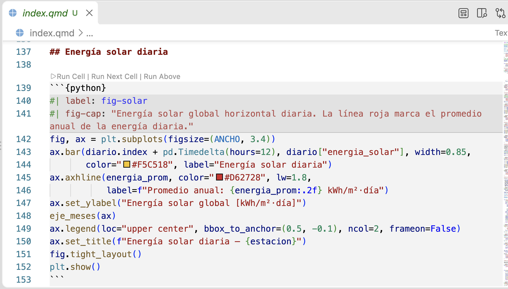

Vibe coding para cálculos de energía
Del archivo climático al reporte reproducible
1 de octubre de 2026
¿Quién es Andrej Karpathy?

Foto: Gladwin Analytics, 2019, vía Wikimedia Commons, CC BY 3.0.
- Doctorado en Stanford (2015) con Fei-Fei Li; creó y dio el curso CS231n de redes convolucionales.
- Miembro fundador de OpenAI (2015-2017); director de IA en Tesla (2017-2022), a cargo de la visión del Autopilot; de vuelta en OpenAI (2023-2024).
- En 2017 escribió “Software 2.0”: las redes neuronales como nueva forma de programar.
- Educador: la serie “Neural Networks: Zero to Hero” y Eureka Labs (2024).
- El 2 de febrero de 2025 publicó el tuit que acuñó vibe coding.
Febrero de 2025: el tuit
Captura del embed oficial de X, @karpathy, 2 de febrero de 2025. El embed recorta el texto; la publicación completa sigue en el enlace.
- “There’s a new kind of coding I call vibe coding, where you fully give in to the vibes, embrace exponentials, and forget that the code even exists.”
- “I ‘Accept All’ always, I don’t read the diffs anymore.”
- Pensado para proyectos desechables de fin de semana.
¿Qué es, entonces, el vibe coding?
Describir en lenguaje natural lo que quieres, aceptar lo que el modelo escribe sin leerlo, y corregir por prueba y error hasta que “funciona”.
1
Describes
en lenguaje natural lo que quieres
→
2
Aceptas sin leer
lo que el modelo escribe
→
3
Corriges
por prueba y error
↻ y vuelves a empezar… hasta que “funciona”
¿Qué anda haciendo la comunidad?
Juguetes que explotaron
3 h de prototipo; 1 M USD ARR en 17 días
MenuGen Foto del menú → imágenes de platillos
fly.pieter.com Simulador de vuelo en el navegador
ScubaDuck Explorador de datos de un ingeniero de PyTorch
Apps sin programadores
60 % de los usuarios de Lovable no programa
Lovable 600 M USD ARR; también Bolt, v0, Replit
Marketing inmobiliario De 3-5 días a minutos
Lo cotidiano Contadores, sorteos, landing pages
Ciencia
20 % de científicos sociales ya usa agentes de código
Encuesta de Anthropic 1 260 investigadores, 2026
Claude Code y Codex Como “asistente de laboratorio”
Protección solar · IER-UNAM Hecha en casa, validada contra pvlib
Cifras de ingresos reportadas por las propias empresas o sus fundadores.
¿Usaron IA para algo de su trabajo este mes/semana?
Entonces… ¿realizarías el análisis de un artículo científico o de una tesis usando vibe coding?
Sí, pero con estas consideraciones:
Ocho consideraciones
1
Maneja el entorno de programas
5
Ejecuta el plan parte por parte
2
Controla el espacio de trabajo y la estructura
6
Pide ideas, retroalimenta, pon a prueba
3
Haz un plan inicial de lo que quieres hacer con los datos
7
Revisa TODO lo que la IA escribe
4
Define herramientas y reglas del espacio de trabajo
8
Recrea y revisa tu prototipo
Ejemplo aplicado: el clima de Monclova
1
Explorar un EPW
TMYx de Monclova (climate.onebuilding.org): metadatos, 8760 horas, calidad y meses de origen.
2
Caracterizar el clima
Temperatura (mensual, percentiles, oscilación), radiación (GHI, DNI, DHI) y viento (velocidad, rosa de vientos, calmas).
3
Cuantificar el calor con confort adaptativo
ASHRAE 55: \(T_{conf} = 0.31\,\bar{T}_{pma} + 17.8\), límite de 80 % en ±3.5 °C. Grados-hora por encima del límite superior.
4
Potencial solar mensual en superficie horizontal
Suma de GHI por mes en kWh/m²·mes y total anual en kWh/m²·año, contrastado con PVGIS.
1. Maneja el entorno de programas
2. Controla el espacio de trabajo y la estructura
3. Haz un plan inicial de lo que quieres hacer con los datos
4. Define herramientas y reglas del espacio de trabajo
5. Ejecuta el plan parte por parte
6. Pide ideas, retroalimenta, pon a prueba
7. Revisa TODO lo que la IA escribe

8. Tuviste tu primer prototipo: ahora recrea y revisa
Cierre
Entonces… ¿realizarías el análisis de una tesis con vibe coding?
Sí, si el resultado viene con
A
Entorno y datos bajo control
Pasos 1, 2 y 4: uv.lock, datos crudos intocables, reglas escritas.
B
Un plan que tú creaste
Pasos 3 y 5: el plan es el contrato; se ejecuta por partes.
C
Una persona que probó, revisó y recreó
Pasos 6, 7 y 8: pruebas físicas, diff, reproducción desde cero.
¿Qué parte de tu próximo análisis
no delegarías, y por qué?
Guillermo Barrios del Valle · gbv@ier.unam.mx · Instituto de Energías Renovables, UNAM
Herramientas usadas
Datos y cálculo
Climate.OneBuilding.Org Archivos climáticos TMYx
EPW Formato de clima de EnergyPlus
pvlib Lectura del EPW y cálculo solar
Reporte y publicación
Quarto Reporte y estas diapositivas
git Historial de cada cambio
GitHub Pages Publicación en la web
Vibe coding para cálculos de energía · IER-UNAM · 2026